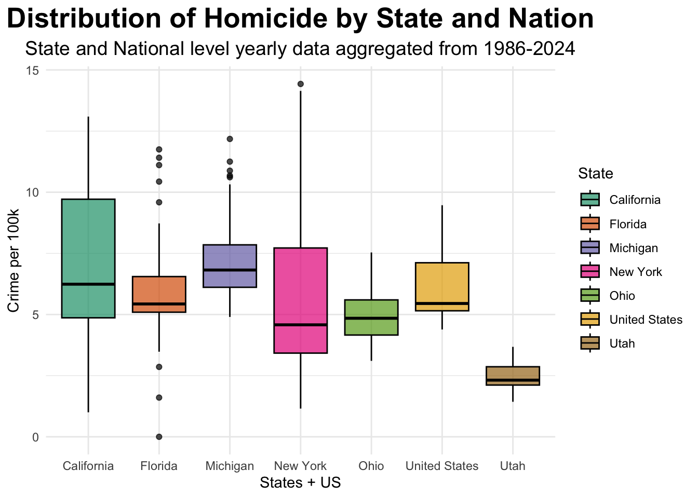
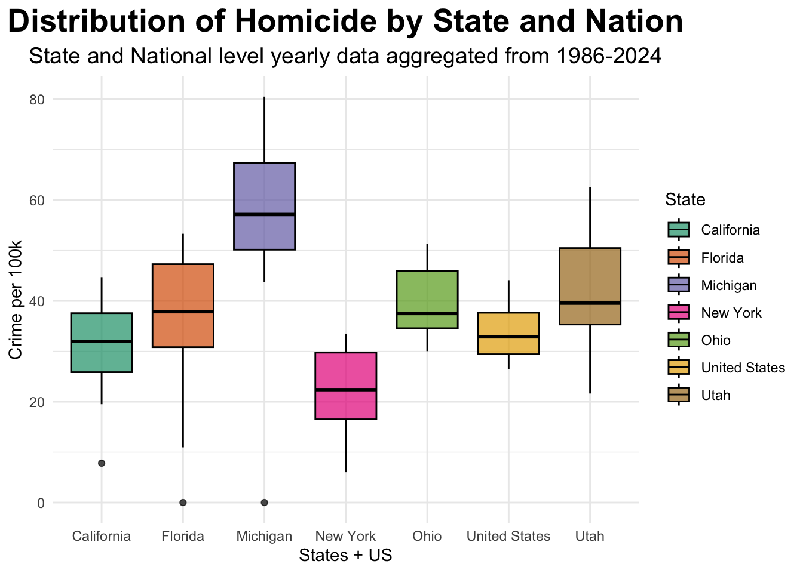
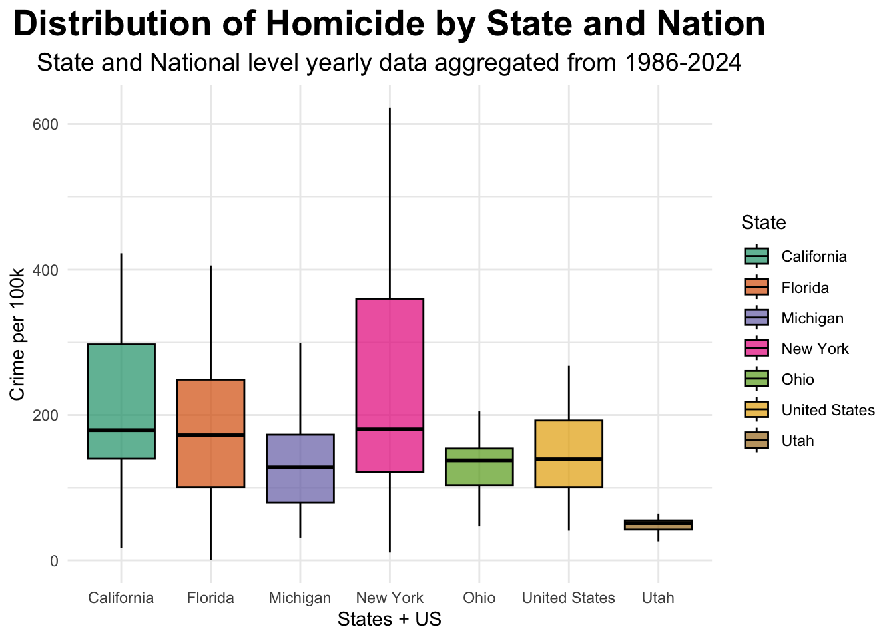

── Attaching core tidyverse packages ──────────────────────── tidyverse 2.0.0 ──
✔ dplyr 1.1.4 ✔ readr 2.1.5
✔ forcats 1.0.0 ✔ stringr 1.5.2
✔ ggplot2 4.0.0 ✔ tibble 3.3.0
✔ lubridate 1.9.4 ✔ tidyr 1.3.1
✔ purrr 1.1.0
── Conflicts ────────────────────────────────────────── tidyverse_conflicts() ──
✖ dplyr::filter() masks stats::filter()
✖ dplyr::lag() masks stats::lag()
ℹ Use the conflicted package (<http://conflicted.r-lib.org/>) to force all conflicts to become errors
library(ggplot2)library(plotly)
Attaching package: 'plotly'
The following object is masked from 'package:ggplot2':
last_plot
The following object is masked from 'package:stats':
filter
The following object is masked from 'package:graphics':
layout
#Pull in cleaned crime datacrime_data <-read_csv('data/processed-data/crime_data_yearly_clean.csv')
Rows: 273 Columns: 13
── Column specification ────────────────────────────────────────────────────────
Delimiter: ","
chr (1): State
dbl (12): Year, aggravated_assault_count, homicide_count, rape_count, robber...
ℹ Use `spec()` to retrieve the full column specification for this data.
ℹ Specify the column types or set `show_col_types = FALSE` to quiet this message.
# Distributions of crime rates# Plot boxplot of violent crime rates per month of each state and the nationggplot(crime_data, aes(x=State, y=violent_crime_rate))+geom_boxplot(aes(fill = State), color ="black", alpha =0.7)+labs(title ="Distribution of Violent Crime by State and Nation",x ="States + US",y ="Crime per 100k",subtitle ="State and National level yearly data aggregated from 1986-2024") +theme_minimal() +theme(plot.title =element_text(hjust =0.5, # centers the titlesize =20, # title font sizeface ="bold" ),plot.subtitle =element_text(hjust =0.5, # centers the subtitlesize =14# subtitle font size ) ) +scale_fill_brewer(palette ="Dark2")
# Plot boxplot of Aggravated Assault crime rates per year of each state and the nationggplot(crime_data, aes(x=State, y=aggravated_assault_rate))+geom_boxplot(aes(fill = State), color ="black", alpha =0.7)+labs(title ="Distribution of Aggravated Assault by State and Nation",x ="States + US",y ="Crime per 100k",subtitle ="State and National level yearly data aggregated from 1986-2024") +theme_minimal() +theme(plot.title =element_text(hjust =0.5, # centers the titlesize =20, # title font sizeface ="bold" ),plot.subtitle =element_text(hjust =0.5, # centers the subtitlesize =14# subtitle font size ) ) +scale_fill_brewer(palette ="Dark2")
# Plot boxplot of Homicide crime rates per year of each state and the nationggplot(crime_data, aes(x=State, y=homicide_rate))+geom_boxplot(aes(fill = State), color ="black", alpha =0.7)+labs(title ="Distribution of Homicide by State and Nation",x ="States + US",y ="Crime per 100k",subtitle ="State and National level yearly data aggregated from 1986-2024") +theme_minimal() +theme(plot.title =element_text(hjust =0.5, # centers the titlesize =20, # title font sizeface ="bold" ),plot.subtitle =element_text(hjust =0.5, # centers the subtitlesize =14# subtitle font size ) ) +scale_fill_brewer(palette ="Dark2")

# Plot boxplot of Rape crime rates per year of each state and the nationggplot(crime_data, aes(x=State, y=rape_rate))+geom_boxplot(aes(fill = State), color ="black", alpha =0.7)+labs(title ="Distribution of Homicide by State and Nation",x ="States + US",y ="Crime per 100k",subtitle ="State and National level yearly data aggregated from 1986-2024") +theme_minimal() +theme(plot.title =element_text(hjust =0.5, # centers the titlesize =20, # title font sizeface ="bold" ),plot.subtitle =element_text(hjust =0.5, # centers the subtitlesize =14# subtitle font size ) ) +scale_fill_brewer(palette ="Dark2")

# Plot boxplot of Robbery crime rates per year of each state and the nationggplot(crime_data, aes(x=State, y=robbery_rate))+geom_boxplot(aes(fill = State), color ="black", alpha =0.7)+labs(title ="Distribution of Homicide by State and Nation",x ="States + US",y ="Crime per 100k",subtitle ="State and National level yearly data aggregated from 1986-2024") +theme_minimal() +theme(plot.title =element_text(hjust =0.5, # centers the titlesize =20, # title font sizeface ="bold" ),plot.subtitle =element_text(hjust =0.5, # centers the subtitlesize =14# subtitle font size ) ) +scale_fill_brewer(palette ="Dark2")

# Create a split between US and State data so its easier to color US in difference to stateus_data <- crime_data |>filter(State =="United States")state_data <- crime_data |>filter(State !="United States")# Create figure for total violent crime datafig <-plot_ly() |># U.S. traceadd_trace ( data = us_data,x =~Year,y =~violent_crime_rate,name ="United States",mode ="lines",type ="scatter",line =list(color ="black", width =3) ) |># States traceadd_trace ( data = state_data,x =~Year,y =~violent_crime_rate,color =~State,split =~State,mode ="lines",type ="scatter",opacity =0.6, # Make states more see through to highlight difference between USshowlegend =FALSE ) |>layout(title =list( #Create title using HTML to show different statestext ="Violent Crime Rates Over Time<br><sup>Six States + United States</sup>" ),xaxis =list(title ="Year"),yaxis =list(title ="Violent Crime Rate (per 100k)") ) |>style(showlegend =TRUE) fig
# Create figure for Aggravated Assault crime ratefig_agg <-plot_ly() |># U.S. traceadd_trace ( data = us_data,x =~Year,y =~aggravated_assault_rate,name ="United States",mode ="lines",type ="scatter",line =list(color ="black", width =3) ) |># State traceadd_trace ( data = state_data,x =~Year,y =~aggravated_assault_rate,color =~State,split =~State,mode ="lines",type ="scatter",opacity =0.6, # Make states more see through to highlight difference between USshowlegend =FALSE ) |>layout(xaxis =list(title ="Year"),yaxis =list(title ="Aggravated Assault Rate (per 100k)") ) |>style(showlegend =FALSE) # Remove legend for every graph except one to ensure no duplicated legends# Create figure for Homicide crime ratefig_hom <-plot_ly() |># U.S. traceadd_trace ( data = us_data,x =~Year,y =~homicide_rate,name ="United States",mode ="lines",type ="scatter",line =list(color ="black", width =3) ) |># State traceadd_trace ( data = state_data,x =~Year,y =~homicide_rate,color =~State,split =~State,mode ="lines",type ="scatter",opacity =0.6, # Make states more see through to highlight difference between USshowlegend =FALSE ) |>layout(xaxis =list(title ="Year"),yaxis =list(title ="Homicide Rate (per 100k)") ) |>style(showlegend =FALSE) # Remove legend for every graph except one to ensure no duplicated legends# Create figure for Rape crime ratesfig_rp <-plot_ly() |># U.S. traceadd_trace ( data = us_data,x =~Year,y =~rape_rate,name ="United States",mode ="lines",type ="scatter",line =list(color ="black", width =3) ) |># State traceadd_trace ( data = state_data,x =~Year,y =~rape_rate,color =~State,split =~State,mode ="lines",type ="scatter",opacity =0.6, # Make states more see through to highlight difference between USshowlegend =FALSE ) |>layout(xaxis =list(title ="Year"),yaxis =list(title ="Rape Rate (per 100k)") ) |>style(showlegend =FALSE) # Remove legend for every graph except one to ensure no duplicated legends# Create figure for Robbery crime ratefig_rob <-plot_ly() |># U.S. traceadd_trace ( data = us_data,x =~Year,y =~robbery_rate,name ="United States",mode ="lines",type ="scatter",line =list(color ="black", width =3) ) |># State traceadd_trace ( data = state_data,x =~Year,y =~robbery_rate,color =~State,split =~State,mode ="lines",type ="scatter",opacity =0.6, # Make states more see through to highlight difference between USshowlegend =FALSE ) |>layout(xaxis =list(title ="Year"),yaxis =list(title ="Robbery Rate (per 100k)") ) |>style(showlegend =TRUE) # Keep this legend as the single legend to show in plot# Create a 2x2 grid to put each plot from above in combined_fig <-subplot( fig_agg, fig_hom, fig_rp, fig_rob,nrows=2,shareX =FALSE, shareY =FALSE, titleX =FALSE, titleY =TRUE, margin =0.06) |>layout(showlegend =TRUE, #Show only 1 legendlegend =list( # Orient the legend at the top horizontallyorientation ="h",x = .5, xanchor ="center",y =1.08 ),annotations =list( #Create an annotation as a title for alllist(text ="Violent Crime Breakdown by Offense Type",x =0.5, y =1.15, # Since it is an annotation it can go beyond the top of plotxref ="paper",yref ="paper",showarrow =FALSE, font =list(size =20) ) ),margin =list(t =90) # Decrease margin so there is less white space )combined_fig